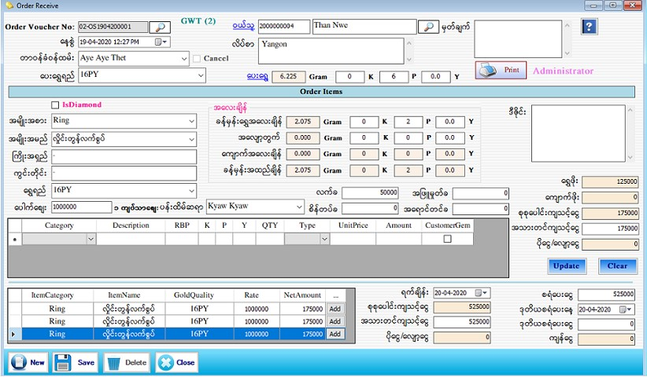

Order Stock Setup

- Customer Order သတ်မှတ်ရန်အတွက် Transaction အောက်ရှိ Order Stock ကို Click ပါ။
- Order Voucher No. ကို Software မှ Auto တပ်ပေးပါသည်။နေ့စွဲတွင် လက်ရှိရောက်နေသော Date ကိုပြပေးပါသည်။
- တာ၀န်ခံ ၀န်ထမ်းကိုရွေးချယ်ပါ။၀ယ်သူသတ်မှတ်ရန်အတွက်၀ယ်သူဘေးရှိ မှန်ဘီလူးကိုနှိပ်ပြီး ရွေးချယ်ရပါမည်။၀ယ်သူ၏ Code No. ကိုအလွတ် သိရှိပါက Code No. ကိုရိုက်ထည့်လိုက်လျှင် သတ်မှတ်ထားခဲ့သော၀ယ်သူအချက်အလက်များကျလာမည်။
- ပေးရွှေရည်တွင် Customer ကပေးသောရွှေရည်ကိုဖြည့်စွက်ပါ။ပေးရွှေတွင်Customer ကပေးသော Gram ချိန်ကိုထည့်သွင်းလိုက်ပါကစုစုပေါင်း Gram ကိုပြပေးပါမည်။။
- မှတ်ချက်တွင် Customer Order နှင့်ပက်သတ်သောအချက်အလက်အချို့ကိုမှတ်သားထားနိုင်ပါသည်။
- အမျိုးအစား၊ အမျိုးအမည်၊ ကြိုးအရှည်၊ ကွင်းတိုင်း၊ရွှေရည်၊ ခန့်မှန်းရွှေအလေးချိန်၊ အလျှော့တွက်၊ ကျောက်အလေးချိန်၊ ပန်ထိမ်ဆရာတို့ကိုသတ်မှတ်ပါ။ ပေါက်စျေးတွင်နောက်ဆုံးနေ့ရက် အချိန်တွင်သတ်မှတ်ခဲ့သော ပေါက်စျေးကိုပြပေးပါမည်။
- ခန့်မှန်းရွှေအလေးချိန်နှင့် ကျောက်အလေးချိန်ကို ပေါင်းပြီး စုစုပေါင်းအလေးချိန်တွင် ပြပေးနေလိမ့်မည်။ အလျှော့တွက်အလေးချိန်နှင့် ခန့်မှန်းရွှေအလေးချိန်ကို ပေါင်း ပေါက်ဈေးနဲ့မြှောက်ပြီး ရွှေဈေးတွင်ပြပေးနေ လိမ့်မည်။ [ (အလျှော့တွက် အလေးချိန် + ခန့်မှန်းရွှေအလေးချိန်) x ပေါက်ဈေး ]
- ကျောက်ပါသောအထည်ဖြစ်ပါက ပေါက်စျေးအောက်ရှိဇယားကွက်တွင် Category, Description, RBP, Qty, Type, Unit Price တို့ကိုဖြည့်စွက်ပါ။၀ယ်သူ၏ ကျောက်ဖြစ်ပါက Customer Gems ကိုအမှန်ခြစ်ပေးရပါမည်။
- ကျောက်ပါသောအထည်ဖြစ်ပါက ပေါက်စျေးအောက်ရှိဇယားကွက်တွင် Category, Description, RBP, Qty, Type, Unit Price တို့ကိုဖြည့်စွက်ပါ။၀ယ်သူ၏ ကျောက်ဖြစ်ပါက Customer Gems ကိုအမှန်ခြစ်ပေးရပါမည်။
- လက်ခသက်သက်ယူမည်ဆိုပါကလက်ခအကွက်တွင်လက်ခတန်ဖိုးကိုရိုက်ထည့်ပေးရပါမည်။စိန်တပ်ခ၊ အဖြူမှုတ်ခ၊ အရောင်တင်ခ တို့ကိုလည်လိုအပ်သလိုဖြည့်သွင်းနိုင်ပါသည်။
- ရွှေဖိုးတွင် ပေါက်စျေးပေါ်မူတည်ပြီး ခန့်မှန်းရွှေအလေးချိန် နှင့် အလျှော့တွက်၏ စုစုပေါင်းတန်ဖိုးကို ပြပေးပါမည်။
- အချက်အလက်များအားလုံးဖြည့်စွက်ပြီးပါက Add Button ကိုနှိပ်၍ သတ်မှတ်ထားနိုင်ပါသည်။ Item အသစ်ထပ်တိုးလိုပါကNet Amount ဘေးရှိ Add Button ကိုနှိပ်၍ ထပ်တိုးနိုင်ပါသည်။ ဥပမာ - ဝယ်သူမှလက်ကောက်(၃)ကွင်းကိုအမျိုးအမည်တူ၊အလေးချိန်တူ အပ်ခဲ့ပါက ပထမတစ်ခုကိုရိုက်ထည့်ပြီး Add button နှိပ်လိုက်ပါက အောက်ဘက်ရှိ Grid ထဲသို့ရောက်သွားပါမည်။ နောက်ထပ်ကျန်သော လက်ကောက်(၂)ကွင်းအားတစ်ခုချင်းစီထပ်ရိုက်နေစရာမလိုဘဲ အောက်ဘက်ရှိ Grid ထဲတွင်ရှိသော Add Button ကိုနှိပ်လိုက်ပါက Auto copy ပွားသွားပါမည်။
- ရက်ချိန်းတွင် order ပစ္စည်းရွေးမည့် Dateကို သတ်မှတ်ပါ။ ၎င်းရက်ချိန်းသည် Order Invoice Return Form ၏ Due Date တွင် ပြပေးနေပါမည်။ စုစုပေါင်းကျသင့်ငွေထဲမှ ပိုငွေ-လျှော့ငွေကို နှုတ်ပေးပြီး အသားတင်ကျသင့် ငွေတွင် ကျသင့်ငွေတန်ဖိုးကိုပြပေး နေလိမ့်မည်။ အသားတင်ကျသင့်ငွေကို ပြင်ဆင်နိုင်သည်။ ဝယ်သူက စရံ ပေးခဲ့ပါက စရံပေးငွေတွင် ဖြည့်စွက်ပါ။
- အချက်အလက်များ အားလုံး Save Button ကိုနှိပ်၍ သိမ်းဆည်းနိုင်ပါသည်။ ဝယ်သူသည် အပ်ထည်မရခင် နောက်တစ်ကြိမ် စရံပေးချင်ပါက Order Voucher No ဘေးရှိ မှန်ဘီလူး button ကိုနှိပ်၍ စရံထပ်မံပေးမည့် Voucherကို ရှာဖွေပါ။ ပြီးလျှင် ဒုတိယစရံပေးသည့်နေ့ကို သတ်မှတ်ပါ၊ ထို့နောက် ဒုတိယ စရံပေးငွေကို ဖြည့်စွက်ပြီး Update Button ကိုနှိပ်ပြီးသိမ်းဆည်းနိုင်ပါသည်။
- Order Invoice Voucher ထုတ်လိုလျှင် Print Button ကိုနှိပ်၍ Voucher ထုတ်နိုင်ပါသည်။
- တာဝန်ခံဝန်ထမ်း၏ဘေးဘက်တွင်ရှိသော Cancel Check Box သည် အော်ဒါပစ္စည်းကိုလာမရွေးတော့သည့်အခါ (သို့) စရံဆုံးအနေဖြင့်သတ်မှတ်တော့မည့်အခါတွင် အမှန်ခြစ်ခြစ်ပေးရမည်ဖြစ်ပါသည်။ထိုသို့အမှန်ခြစ် ခြစ်လိုက် ပါက ထိုအော်ဒါဘောင်ချာသည် အပ်ထည်ပြန်ရွေးခြင်း Form တွင်ပါရှိမည်မဟုတ်ပါ။
- သိမ်းဆည်းပြီးသား Data များအား ပြန်လည်ကြည့်ခြင်း၊ ပြင်ဆင်ခြင်းများပြုလုပ်ချင်ပါက Order Voucher No ၏ ဘေးတွင် ရှိသော မှန်ဘီလူး button ကိုနှိပ်ပြီးပြန်လည်ကြည့်ရှုပြင်ဆင်ချင်သော Order Voucher အား ရွေးချယ် ပြီးပြင်နိုင် ပါသည်။
- သိမ်းဆည်းပြီးသား ထည့်ပြီးသား Data များကို ဖျက်လိုလျှင် Order Voucher No ၏ဘေးတွင်ရှိသော မှန်ဘီလူး button အားနှိပ်ပြီးရှာပါ။ ထို့နောက် မိမိဖျက်လိုသော Data ကို Delete Button ကိုနှိပ်၍ ဖျက်နိုင်ပါသည်။
- Order Voucher အသစ်ထည့်လိုပါက New Button ကိုနှိပ်ပြီး အသစ်ထည့်နိုင်ပါသည်။
- Order Stock Form အား အသုံးပြုပြီးပါက Close Button ကိုနှိပ်၍ ပိတ်နိုင်ပါသည်။